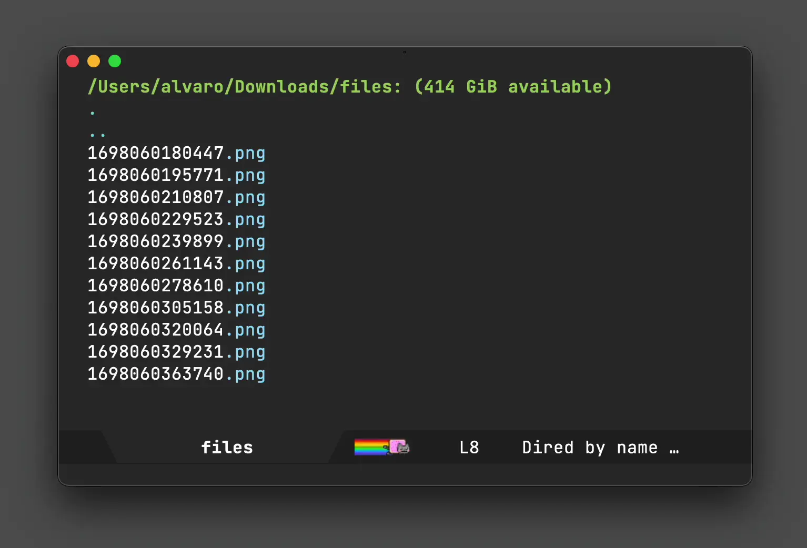

Álvaro Ramírez
Native Emacs/macOS UX integrations via Swift modules
Once you learn a little elisp, Emacs becomes this hyper malleable editor/platform. A live playground of sorts, where almost everything is up for grabs at runtime. Throw some elisp at it, and you can customize or extend almost anything to your heart's content. I say almost, as there's a comparatively small native core, that would typically require recompiling if you wanted to make further (native) mods. But that isn't entirely true. Emacs 25 enabled us to further extend things by loading native dynamic modules, back in 2016.
Most of my Emacs-bending adventures have been powered by elisp, primarily on macOS. I also happen to have an iOS dev background, so when Valeriy Savchenko announced his project bringing Emacs dynamic modules powered by Swift, I added it to my never-ending list of things to try out.
Fast-forward to a year later, and Roife's introduction to emt finally gave me that much-needed nudge to give emacs-swift-module a try. While I wish I had done it earlier, I also wish emacs-swift-module had gotten more visibility. Native extensions written in Swift can open up some some neat integrations using native macOS UX/APIs.
While I'm new to Savchenko's emacs-swift-module, the project has wonderful documentation. It quickly got me on my way to build an experimental dynamic module introducing a native context menu for sharing files from my beloved editor.

Most of the elisp/native bridging magic happens with fairly little Swift code:
try env.defun( "macos-module--share", with: """ Share files in ARG1. ARG1 must be a vector (not a list) of file paths. """ ) { (env: Environment, files: [String]) in let urls = files.map { URL(fileURLWithPath: $0) } let picker = NSSharingServicePicker(items: urls) guard let view = NSApp.mainWindow?.contentView else { return } let x = try env.funcall("macos--emacs-point-x") as Int let y = try env.funcall("macos--emacs-point-y") as Int let rect = NSRect( x: x + 15, y: Int(view.bounds.height) - y + 15, width: 1, height: 1 ) picker.show(relativeTo: rect, of: view, preferredEdge: .maxY) }
This produced an elisp macos-module--share function I could easily access from elisp like so:
(defun macos-share () "Share file(s) with other macOS apps. If visiting a buffer with associated file, share it. While in `dired', any selected files, share those. If region is active, share files in region. Otherwise share file at point." (interactive) (macos-module--share (vconcat (macos--files-dwim))))
On a side note, (macos--files-dwim) chooses files depending on context. That is, do what I mean (DWIM) style. If there's a file associated with current buffer, share it. When in dired (the directory editor, aka file manager), look at region, selected files, or default to file at point.
(defun macos--files-dwim () "Return buffer file (if available) or marked/region files for a `dired' buffer." (if (buffer-file-name) (list (buffer-file-name)) (or (macos--dired-paths-in-region) (dired-get-marked-files)))) (defun macos--dired-paths-in-region () "If `dired' buffer, return region files. nil otherwise." (when (and (equal major-mode 'dired-mode) (use-region-p)) (let ((start (region-beginning)) (end (region-end)) (paths)) (save-excursion (save-restriction (goto-char start) (while (< (point) end) ;; Skip non-file lines. (while (and (< (point) end) (dired-between-files)) (forward-line 1)) (when (dired-get-filename nil t) (setq paths (append paths (list (dired-get-filename nil t))))) (forward-line 1)))) paths)))
I got one more example of a native macOS integration I added. Being an even simpler one, and in hindsight, I prolly should have introduced it first. In any case, this one reveals dired files in macOS's Finder app (including the selection itself).

try env.defun( "macos-module--reveal-in-finder", with: """ Reveal (and select) files in ARG1 in macOS Finder. ARG1 mus be a vector (not a list) of file paths. """ ) { (env: Environment, files: [String]) in NSWorkspace.shared.activateFileViewerSelecting(files.map { URL(fileURLWithPath: $0) }) }
The corresponding elisp is nearly identical to its macos-share sibling:
(defun macos-reveal-in-finder () "Reveal file(s) in macOS Finder. If visiting a buffer with associated file, reveal it. While in `dired', any selected files, reveal those. If region is active, reveal files in region. Otherwise reveal file at point." (interactive) (macos-module--reveal-in-finder (vconcat (macos--files-dwim))))
My Swift module experiment introduces two native macOS UX integrations, now available via M-x macos-share and M-x macos-reveal-in-finder. I've pushed all code to it's own repo.
I hope this post brings visibility to the wonderful emacs-swift-module project and sparks new, native, and innovative integrations for those on macOS. Can't wait to see what others can do with it.
Enjoying this content? Find it useful? Consider ✨sponsoring✨.